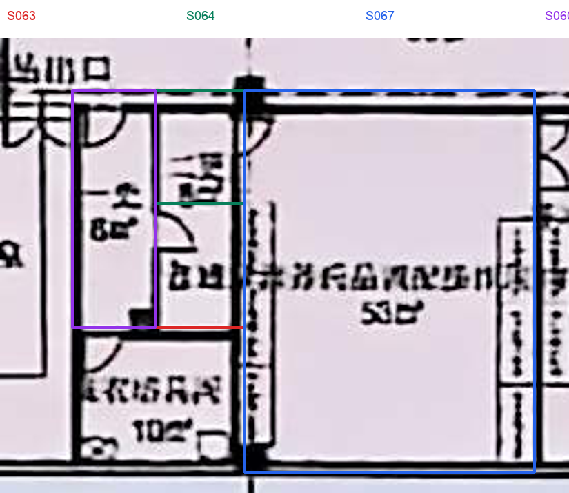
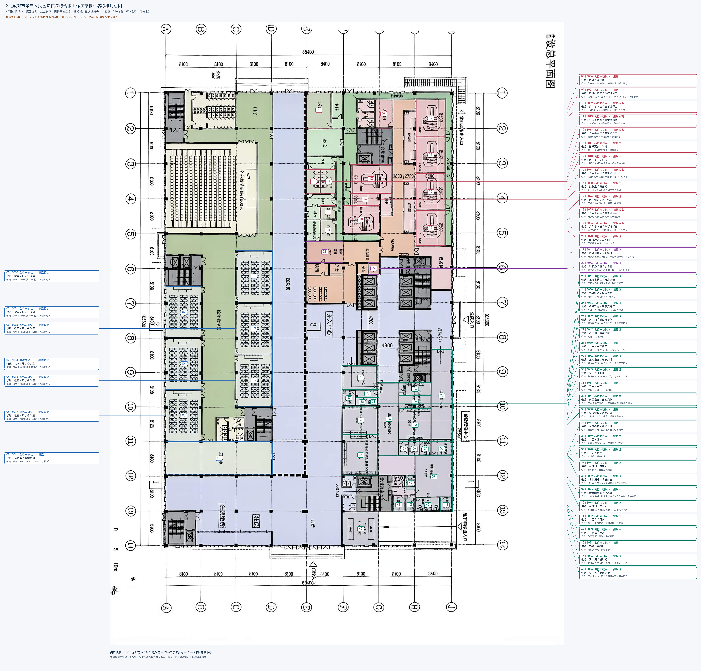

24_成都市第三人民医院住院综合楼｜连通复核草稿
名称已全部同步（0项unknown）。连通复核已补录可见门洞；仍有2项主要连接疑点和1项合并指令待确认，尚未宣布整体打标完成。
本图范围：仅处理本目录的单张平面。图内包含介入中心医技及医护／患者支持、静脉配液中心、住院入口与电梯交通、社保／住院缴费、医院街和综合教学区。按入口、公共服务及教学布局暂按首层功能平面理解，原图未给出清晰楼层标题。未见住院病房；门诊入口为公共大厅接口，不能据此把本图全部归为普通门诊。院外坡道、室外楼梯及其他楼层不计入室内空间。
标注规模：92个空间／区域。类型与数量：卫生间9个、交通核10个、教学培训2个、通道7个、办公7个、库房4个、影像检查6个、服务工作区5个、建筑设备用房3个、工作人员支持用房10个、前室2个、会议教学6个、服务区2个、留观1个、患者准备3个、护士站1个、大厅7个、配药用房6个、挂号收费1个。
关系与门洞：共117条关系，其中人员可达93条、服务联系4条、共墙13条、入口7条。已定位87个门洞／开口红点，对应77条access；另有16条无定位点的概念连接。E编号入口独立保留，不计入P红点。
修改依据：按用户填写保留“培训会议室、DR、X光、抢救苏醒、营养药品配置操作间、审方打单室”等原名；共享英文类别用于分类，不改写用户用词。已归档本轮修改前四文件及完整填写表。
相对规模：室内面积比例合计为1；本轮暂未合并空间，沿用全部92个轮廓。配液区合并范围确认后再调整轮廓、引用和面积。
连接修正：R038由“等候区S050—介入中心公共区S057”修正为“等候区S050—电梯厅S054”，门位在二者共边；R024由“公共区S088—交通核S090”修正为“住院缴费S091—交通核S090”，并依据开放服务分区连续补充S088—S091。S052增加与S051／S055的电梯门面连接。S074经前室S079进入支通道S080，不直接跨过中间房间连接S080。
图面连续与布局推断：医院街、大厅各功能分区、S042—S043、S066—S074、S074—S079按连续图面保留概念连接，不在轴线／人为功能边界编造门位。电梯核按整体节点连接其所朝厅道，不细分核内路线。S088—S091为开放服务分区连续判断，不表示公众可越柜台或具备门禁权限。服务窗口与共墙独立保留，不据此生成通行红点。
连通性测试：仅使用access与各入口的目标节点遍历，84/92个节点可从已标入口到达。未形成入口路径的8项为S025 X光、S036饮水、S044／S045更衣、S047护士站、S065药品调配、S086空调机房、S092社保。主要功能疑点仅S025和S065；其余属于服务节点或本轮不细究的内部小间，未记人员连接不作“不相通”的结论。
本轮不细究的内部细节：两处患者更衣小间、饮水／护士站／社保服务区内部进出、空调机房检修进出，以及更衣和辅助小间未能定位的内部细门。不为消除图孤立而补造关系。
核验范围：正式结构、面积、编号和SVG红点一致性检查；全部开口到双方多边形的距离审计；完整SVG及密集局部目检；名称表填写和图片引用保留。结构检查通过不等于下列语义疑点已解决。
原图 · 当前标注SVG
连通与范围待确认（本轮）
可在对应“我的确认／备注”填写“同意”或实际连接的S编号。以下建议尚未作为已确认access写入JSON，也未添加猜测门位。
K03｜二更合并范围

问题：表中两行“31、32合并”具体指哪两个空间？
我的判断：同一句合并指令填在核对30（S063）及31（S064）两行，倾向合并这两个相邻小间并保留S063；若按字面31、32，则涉及S064和营养药品配置操作间S067。须澄清后再合并，不擅自处理。
我的确认／备注：待填写
房名与范围核对（2026-11-05）
以下保留用户已填写的45行原表及固定映射，全部房名已按“我的确认／备注”同步；30、31两行仅提取名称“二更”，合并范围仍待K03澄清。原预估与旧依据保留作追溯，不再代表当前名称。
后续如需更正可继续改本表确认栏，或在聊天中按原核对号／S编号说明；本轮不重排核对号。
本轮已进入连通复核；当前房名以JSON和确认栏为准。历史总图仍保留45个原核对号，不能据此把已确认项重新视为未知。

原图 · 现有标注 SVG